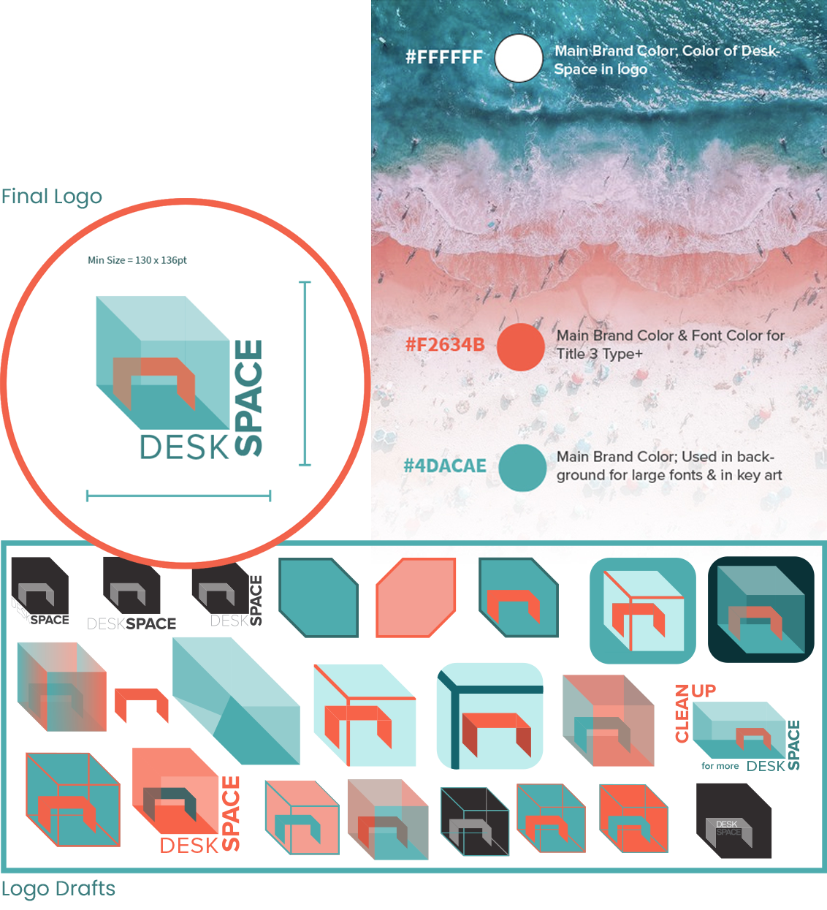

Project Specs
Duration 5 weeks
Design Roles UX Researcher, UX Designer, & Graphic Designer
Deliverables User Surveys, User Personas, Competitive Analysis, User Stories & Flows, Brand Personality & Messaging, Wireframes, User Testing, Custom Graphics, Brand Guidelines, Clickable Prototype
Tools Google Forms; Draw.io; Figma; Adobe Photoshop, Illustrator, and XD
The Problem
The Solution
A company wants to get into the cloud storage industry - what do consumers already get from their cloud storage options, what users should they target, what do those users wish they had, how can you build it, and what type of brand should deliver it?
DeskSpace is a customizable cloud storage and content creation service for consumers straddling too many cloud services. In addition to all the Google Drive and Dropbox features, DeskSpace allows users to reduce file bloat across multiple services to get more ‘desk space’ without forcing local downloads or having to temporarily pay for more space.
User Surveys
The Questions
Current Usage
What cloud services are people currently using and why?
Features
How users prioritize features such as: Uploading, Creating content, Organizing, & Saving content online?
Money
What are users willing to pay for & what are they already paying?
Collaboration
Are/could users be motivated to share and collaborate with non-users?
Respondents
What are the demographics of potential users & their overall fluency with technology?
Devices
How users access these features (mobile vs web)
The Answers
What they said...
Oversaturation & Complaints
I expected that people would be familiar with cloud storage, but I was surprised to learn how oversaturated respondents felt with the number of services they use.
Almost half of respondents were using or had used 3 or more storage apps, which came up time and again in the complaints.
Top complaints: 1. Not enough free space (44% of complaints); 2. Multiple services & logins confusion (22%) and
2. Sharing files with non users (22%); 3. Conerns over who has file permissions (11%).
Why do respondents use so many services?
- people will jump to other services in order to get more free space
- interacting with users of other services or non-users sometimes necessitates multiple sign ups
- certain devices are set up by default with certain cloud services (e.g. iPhones & iCloud)
Features & Preferences
Takeaway: all the features are important to users
Respondents indicated that all the features we asked about were important to them. However, they ranked uploading files as the most important feature and saving content online as the least important. Outside of these rankings, respondents also expressed that they collaborate on a daily basis via their chosen service, so that was clearly important as well.


70% of respondents stated that they prefered G Drive to other options. Upon looking at the open responses as to why users preferred one service to another, the most common responses were: 1. User-friendly UI (35%), 2. Multi-device platform (26%), and 3. Wide variety of native programs (22%) tied with 3. Being built on an email platform with an already wide user base (22%).
What does this mean for the product?
TL;DR
- While having mobile access is extremely important to the average user, having a desktop site for online storage is an absolute necessity
- The wider the default user base, the better
- Minimize obstacles for sharing content with non-users
- Offer a user-friendly UI good enough to compete with Google’s
- Offer a variety of ways or apps to create all types of content
- Offer a variety of ways or apps to create all types of content
- Give users as much free space as financially viable
- Must include features for saving, organizing, uploading, sharing, and creating content
- Do not focus on users already invested in a system tied to their device
User Personas

Chris • On-the-go Professional • 32
“I have a stressful job and a lot of social commitments, so anything that helps me stay on top of it without having to think is amazing.”
Chris Persona
Jenna • Organized Planner • 28
“I hate how many different programs and logins I have to use to accomplish the same daily tasks. Things should be more efficient.”
Jenna PersonaCompetitive Analysis
G Drive

15 GB Free • Anything you want to store or create • Power of Google
Dropbox

2 GB Free • TEAM, TEAM, TEAM • Do work together, securely
Opportunities in the Market
The brand can target consumers using both apps (or more), and position the product as the “best of both worlds” by offering the same features AND letting users make the most of their free space by getting rid of superfluous files across multiple apps.
User Stories
User Flows

Wireframes
sketches
While sketching, I went through multiple iterations of several pages such as the user dashboard here. It became clear the user dashboard didn’t need a nav menu, which led to the second image. However, in the last iteration I included buttons for common tasks that people have struggled with per user surveys and a couple of tasks that differentiate DeskSpace from its competitors like an “organize” button.
digital

In bringing the sketches to life on the screen, I was able to flesh out the proportions between buttons, menus, icons etc. I also got clearer ideas of how graphics and terminology would communicate the intended, concise user flows to new users as I connected pages and symbols in the prototype.
Wireframeswireframe testing
Tested Tasks
- Sign Up for an account
- Create a file
- Organize a file -- i.e. move it to a new folder
Users felt comfortable navigating most of the site, but as users narrated their experience, I observed there was confusion over the new features - especially regarding the organize/import button - so I updated the terminology to “clean up” and replaced one of the buttons with “sync.” Those were words employed by users themselves when guessing what the buttons did and as they paraphrased explanations I had just given them. I removed the app button since it was clear that users were able to easily access the integrated apps through the ‘new’ button and the sidebar.
Brand ID
concept
The guidelines for our identity based on our personas and data boiled down to:
“Your desk is wherever you are while you balance the personal and professional lives you lead, aided by how easy DeskSpace is.”
I moodboarded attainably beautiful and organized home offices as well as organization websites, which ultimately guided everything from the choice of photography, to typography, to the shapes of buttons and cards.

name & logo creation
“Not enough free space…”
- Respondent 19
“…so many big files like photos & video...”
- Respondent 5
“…running out of space…”
- Respondent 27
In choosing a name for the product, I looked at the language of the users themselves. I was inspired by the idea of space being
such an ethereal - almost magical* - concept when it comes to ‘cloud computing’ and how not having enough of it or easy access to
it means not being able to get your tasks done.
* “Dropbox works like magic. I don’t know how it does what it does.” - User 17
Preference Testing (Round 1)
I showed some very rough sketches of various logos and product name combinations to five respondents. The concept of ‘desk space’ with a recognizable desk, while my first idea, was actually preferred by all respondents.
Color Palette & Logo
I chose a beachy color palette to amplify the feeling of calm that users often lack in their busy lives.

Font & Interactivity
Usability Tests
Tested Tasks
- Sign Up for an account
- Create a file
- Organize a file -- i.e. move it to a new folder
 Find & Delete Duplicate Files
Find & Delete Duplicate Files
After bringing the wireframes to life in Figma and after fixing a few bugs within the various click behaviors of the prototype,
I asked new users to narrate their experiences and perform the same three tasks as before, plus one a new one that involved the
‘new feature’: deleting duplicates. The users were able to perform all four tasks, this time with even less hesitation. They
said the interface was easy to understand and reminded them of Google Drive.
The improvements that I needed to make to the design were identified during the users’ narration phase of the usability tests.
They were:
Having text next to a symbol was confusing, and users intuitively understood this was the button to return to the dashboard.
I strongly recommended signing up with an email because my intent was to have the product available directly within an email account, similar to how G Drive is at the click of a button within Gmail, something users loved per surveys. However, I realized users were tripping up on this page. As I studied the page setup and asked follow-up questions, I realized that A) this page diverged too much from the industry norm B) it wasn’t useful for the login page, as opposed to the activating account page, and C) having an extra click to log in with a non-Gmail, non-Outlook, or non-Facebook account was punishing those users unintentionally. Hence why I replaced the ‘other’ button with the email & password input fields.

Similarly to the above, on the activating page, I realized that there just weren’t enough AOL & Yahoo users to warrant having two extra buttons for them. Instead, those users could use the “other” button. Plus, Facebook’s button was oddly placed and strange in proportion to the others.
Since the idea of syncing files between cloud accounts is somewhat novel, users were having to guess what the sync button did.
When I added a dropdown menu that showed the cloud accounts you could sync with DeskSpace, users were much more certain of what the intent of this feature was.
Preference Testing (Round 2)

Color of buttons on Getting Started page
All user testing was unanimous, so all the changes were implemented!

Different 'clean up' icons

Hover color on dropdown menus
Conclusion
It wasn’t surprising that users want as much free space as they can get and want files to upload and download as fast as possible; however, it was surprising that in trying to solve those issues on their own, users created new issues like having too many forgettable, disorganized accounts and getting confused on who had access to what.
"...realizing I could use design to alleviate the 'free space' issue by helping users make the most of the space they have."
At first, I considered free space and upload times purely technical issues. My breakthrough was realizing I could use design to alleviate the “free space” issue by helping users make the most of the space they have. Not only did it address the number one problem among users, but it also fit perfectly with the needs of our second user persona, Jenna, who wants her things organized.
If given more time, I would create more examples of what onboarding messaging should look like for first-time users so that during usability tests, I would hear more certainty from respondents about what the buttons like “clean up” and “sync” did. As it is, the users were able to correctly guess what the buttons did, and accomplished the other tested tasks easily, so the app is on the right track, and I look forward to seeing its successful evolution.